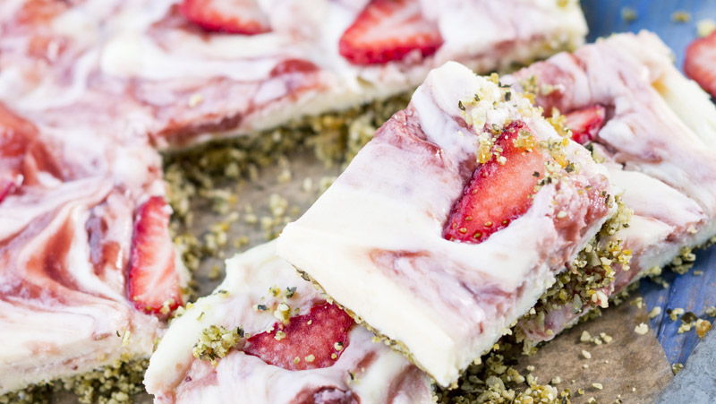

Utan ugn
denna sida är perfeckt för mindre barn som inte får använda ugnen. De här 3 sorters bakelser kan man nämligen gjöra uta en ugn.
Chokladbollar
Recept från ICA
Du behöver
- 100 g smör
- 1 dl socker
- 1 msk vaniljsocker
- 3 msk kakao
- 3 dl havregryn
- 3 msk kallt starkt kaffe
- pärlsocker eller annan garnering
Gör såhär
- Smält smöret och låt puttra en kort stund.
- Rör ihop socker, vaniljsocker, kakao, havregryn, kaffe och smöret. Ställ in i kylskåp så att smeten stelnar lite, ca 1 timme.
- Forma bollar. Rulla i pärlsocker (gärna mångfärgat), kokos eller annan garnering.

Cheesecake med vit choklad och jordgubbar
Recept från allers.se
Du behöver
Till botten
- 4 dl pumpakärnor
- 20 torkade aprikoser, ca 150 g
- 3 msk kokosfett
Till fyllning
- 300 g vit choklad
- 2 burkar mascarponeost à 250 g
- 3 dl jordgubbsmarmelad med fast konsistens, ca 400 g
- ca 5 jordgubbar
Gör såhär
- Botten: Mixa ihop alla ingredienserna i en matberedare till en fin massa som börjar gå ihop. Tryck ut i en bakpappersklädd liten långpanna, ca 20×25 cm. Ställ i kylen.
- Värm jordgubbsmarmeladen så den blir lite flytande och rör ner slarvigt i mascarpone- och chokladkrämen. Bre ut över bottnen i formen. Skiva jordgubbarna och lägg ut på krämen så de får stelna med. Låt stå i kylen tills fyllningen satt sig och stelnat, 30–40 minuter.
ggg
Frostrisbollar
Recept från alltommat.se
Du behöver
- 125 g smör
- 125 g florsocker
- 1 dl kakao
- 1 apelsin, rivet skal av
- 8 dl frostris med chokladsmak, krossad
Gör såhär
- Smält smöret i en kastrull.
- Blanda florsocker, kakao, apelsinskal och frostis i en skål.
- Häll smöret över och blanda runt.
- Låt vila en stund så att smöret svalnar något.
- Krama ihop till bollar med hjälp av handen.
- Låt dem kallna.
- Förvara dem i en plastlåda med lock och låt dem stå svalt tills de ska serveras.